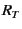
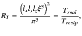
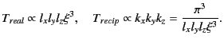
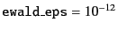
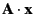
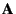
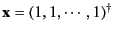

; sample set file for xi3 ; SC lattice config of 8 particles in (5,5,5) box ; $Id: manual.tex,v 1.5 2008/10/12 20:16:53 kichiki Exp $ (define version "F") ; version. "F", "FT", or "FTS" (define flag-mat #t) ; #t => matrix scheme, #f => atimes scheme (define flag-notbl #f) ; #t => no-table, #f => with table (define np 8) ; number of particles (define ewald-eps 1.0e-12) ; cut-off limit for Ewald summation ; lattice vector (define lattice '(5.0 5.0 5.0)) ; configuration of particles (define x #( 0.0 0.0 0.0 2.5 0.0 0.0 0.0 2.5 0.0 0.0 0.0 2.5 0.0 2.5 2.5 2.5 0.0 2.5 2.5 2.5 0.0 2.5 2.5 2.5 )) ; list of time ratio Tr/Tk for Ewald summation (optional) ;(define ewald-trs ; '(0.1 ; 1.0 ; 10.0 ; 100.0 ; ))Here is a part of the result:
# F version table matrix 0.110000 0.245379 22.087 21.575 0.512 1.33163581314065055e-01 2197 125 1713 80 0.121000 0.249308 21.106 20.592 0.514 1.33163581314059309e-01 2197 125 1713 80 0.133100 0.253300 20.812 20.224 0.588 1.33163581314069690e-01 2197 125 1689 92 ...Each line of the output consists of 10 columns in this case, that is, for F version with table. First 5 columns are the same for any cases; First and second columns are  and
In xi3 program as well as libstokes
library, another parameter instead of  is used.
is a rough estimation of CPU time ratio between real and reciprocal
summations and related to
is used.
is a rough estimation of CPU time ratio between real and reciprocal
summations and related to  as
as
|  | (2.31) |
|  | (2.32) |
Changing , the number of lattice points in real and reciprocal
summations are changing: The former is decreasing
and the latter increasing as is increasing.
Because the calculation result is independent of  and therefore ,
we can use this parameter to tune the calculation of the Ewald summation.
That is, we can take a specific value of
and therefore ,
we can use this parameter to tune the calculation of the Ewald summation.
That is, we can take a specific value of  which minimize
the calculation cost.
This is the whole purpose of xi3 program.
Figure 2.2 shows CPU times for real and reciprocal spaces
and the total.
which minimize
the calculation cost.
This is the whole purpose of xi3 program.
Figure 2.2 shows CPU times for real and reciprocal spaces
and the total.
Previously, I wrote that
the calculation result is independent of  and therefore .
This is the mathematical conclusion and therefore this is a good
check for the code:
and therefore .
This is the mathematical conclusion and therefore this is a good
check for the code:
The results should be the same for variousActually, we truncate the lattice summations at the point where the term is small enough. The criteria is given by another parameter ewald_eps. In this example, we take . (Small enough, isn't it?) In the code of xi3, we calculate not physical problems but the plain  calculation for the mobility matrix  and a vector . The 6th column of the result xi3 generates is the average of , that is, a kind of averaged velocity. (``a kind of'' means that the average is taken element-wise rather than particle-wise.) Figure 2.3 shows the calculated results versus . The values in y-axis is the absolute value of the difference to a point at(and therefore ).